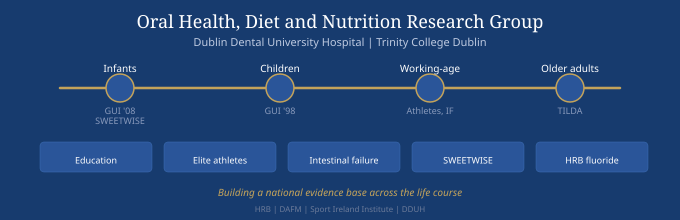

Based at Dublin Dental University Hospital and Trinity College Dublin, our programme spans six interconnected research strands, from infant nutrition through to cognitive health in ageing.
Research programme
A new nutrition curriculum at DDUH trains 180+ dental students per year in dietary assessment using digital tools, from peer diet workshops to OSCE-assessed case portfolios.
DDUH fundedThis work contributed to an international competency framework for diet and nutrition in oral health education, developed through the ADEE Community of Practice on Nutrition. Key outputs include:
In collaboration with the Sport Ireland Institute, we collected the first national data on diet and oral health in Irish elite athletes. Despite high nutritional awareness, 90% of athletes surveyed had tooth decay.
Sport Ireland InstituteThe Division II study examined athletes across Olympic sports, combining clinical oral health examination with detailed dietary assessment. Key findings:
A cross-sectional study at the St James's Hospital national intestinal failure referral centre found untreated dental caries in 72% of patients and unexpectedly high oral MRSA colonisation (17%).
DDUH fundedThis study raises the question of whether the oral cavity is an unrecognised reservoir for catheter-related bloodstream infections in this vulnerable patient group. Key findings and next steps:
A DAFM-funded consortium across TCD, UCD and TU Dublin addressing the high free sugar content of commercially available complementary foods for infants in Ireland.
DAFM funded — €1.3M consortiumTCD/DDUH's role within the SWEETWISE consortium focuses on the oral health impact of infant foods and the development of a novel in vitro model:
Ireland's largest oral health research strand, examining community water fluoridation, oral health and cognitive outcomes using data from TILDA and Growing Up in Ireland.
Health Research Board — SDAP-2025-017Using individual-level geocoded lifetime fluoride exposure estimates linked to national cohort data, this programme provides the most comprehensive Irish evidence on fluoride, oral health and cognition to date:
Using longitudinal data from the Growing Up in Ireland study, this strand examines how oral health behaviours and outcomes develop from early childhood through adolescence.
Trinity Research Doctorate Award 2026Applying life-course epidemiological methods across GUI Cohorts '98, '08 and '24, this PhD programme identifies critical periods for prevention and the social determinants of oral health inequality in children and young people:
People
Support
Outputs
Tools
Interactive tools and data resources from the group.
Get in touch